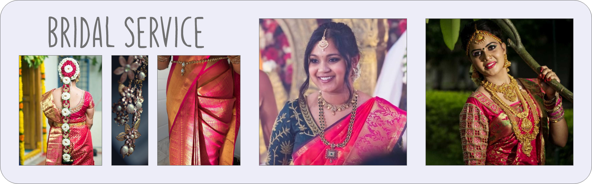

BRIDAL SERVICE

BRIDAL HAIRSTYLE
Your bridal hairstyle deserves as much attention as your sartorial and makeup choices. An outfit worn with a different hairstyle can totally change the look, and hence, what kind of bridal hairstyles you choose for your wedding revelries should be a thoughtful decision. So, to ensure that your bridal hairstyle perfectly compliments your wedding looks, here we do latest bridal hairstyles that are sure to win you a lot of compliments.
BRIDAL MAKEUP
Your wedding look is incomplete without bridal makeup. With our exceeding exceptional skills with the brush and modern approach to makeup application, We have won the hearts of several of our clients with modernised and western makeup techniques., We also offer free trials before your actual wedding functions, to ascertain the look that you want to go for. From airbrushing, draping to hairstyling, all things are taken care of by her with meticulous precision.
FLORAL HAIRSTYLE
Floral hairstyle is a hair braid/plait decorated with flowers. It is a traditional bridal hairstyle and mostly used by brides in Indian marriages. Floral hairstyles are a part of the makeup and are an extension of your personality. A Collection of beautiful Poola jada designs for Your Wedding. Our exquisite floral design will make your event memorable, personal, and captivating. Let our passion for flowers and floral design help make your day unforgettable.
SAREE DRAPING
A long 6 yard drape one-piece fabric to wrap around the body. Look glamorous on your special day with our service. We drape Brides and their relatives for all the functions of Marriage.